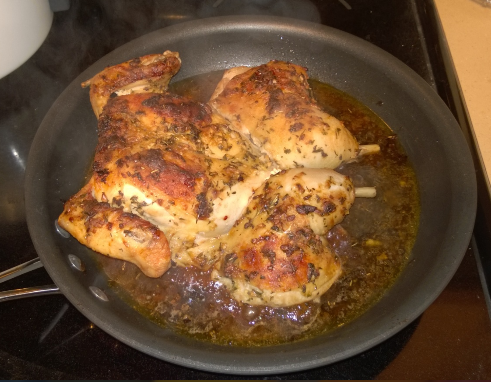

Spatchcock Chicken

Ingredients
- One 4# chicken
- 5 large garlic cloves, minced
- 2 tbs Dijon mustard
- 2 tbs dry white wine
- 2 tbs extra-virgin olive oil
- 1 tbs soy sauce
- 1 tsp Tabasco
- 1 tsp herbes des Provence
- ½ tsp kosher salt
- ½ C chicken stock
- ½ C red wine
Directions
- Prep Oven: Preheat oven to 400°F.
- Spatchcock Chicken: Using poultry shears, cut along both sides of the backbone and remove it. Trim the bottom ends of the leg bones. You can reserve the bones for stock, if desired.
- Flatten & Score: Turn chicken breast‑side up and press firmly to flatten. Partially cut through the joints between thighs and drumsticks and between wings and breast. Season both sides with pepper.
- Make Mustard Paste: In a bowl, mix mustard, wine, olive oil, soy sauce, Tabasco, salt, and herbes de Provence.
- Season Chicken: Turn chicken breast‑side down and spread ½ of the mustard mixture over the meat. Place chicken skin‑side up in a large skillet and spread remaining mixture over the skin.
- Brown: Set skillet over high heat and cook ~5 minutes, until the skin begins to brown.
- Roast: Transfer skillet to the oven and roast 30-35 minutes, until skin is browned and chicken is cooked through.
- Deglaze: Return skillet to the stovetop. Deglaze with ½ C chicken stock and a few tablespoons red wine.
- Rest & Serve: Let chicken rest 5 minutes, then transfer to a cutting board. Cut into 8 pieces and serve.
The Gumbo Page
Michael Fritsche
mbf@fritsche.org